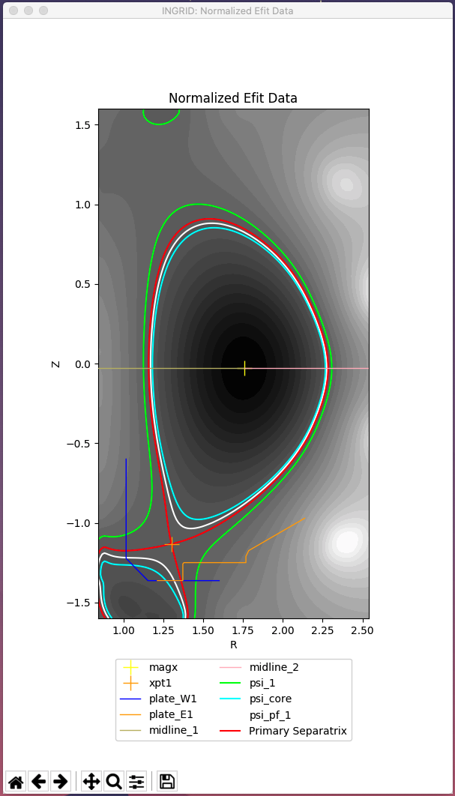
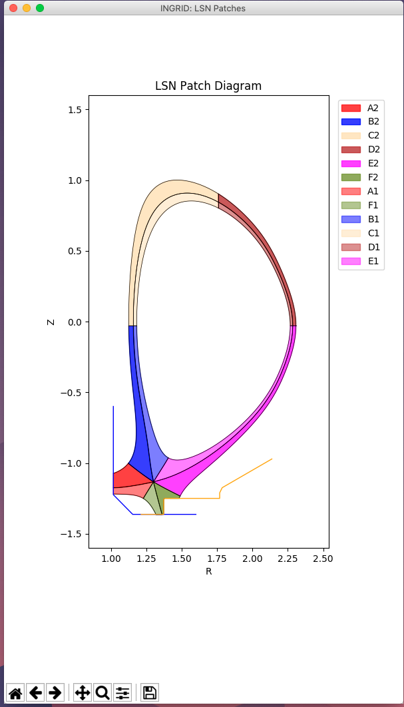
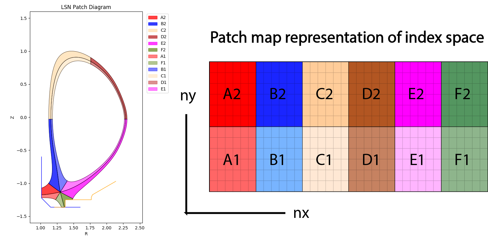
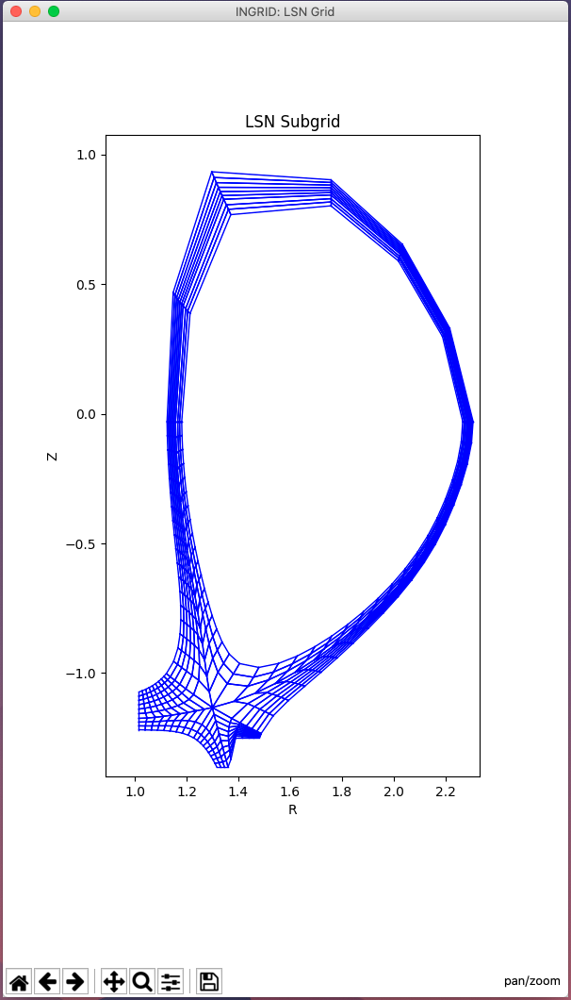

Example: single-null configuration (introduction)¶
Warning
This tutorial assumes INGRID has been launched from the provided GUI driver. See page Launching the INGRID GUI for explaination.
Here we will demonstrate how to generate a grid for a lower single-null (SNL) configuration. This tutorial aims to:
Explain the GUI capabilities
Illustrate the INGRID workflow (data analysis \(\rightarrow\) patch-generation \(\rightarrow\) grid-generation \(\rightarrow\) exporting gridue)
Expose the user to key parameter-file controls (see parameter-file documentation for further details)
Note
Although we are creating a lower single-null grid here, INGRID internally treats both lower and upper single-null configurations as SNL class instances. This means there is no difference in user operation for generating a grid for either LSN or USN configurations.
Loading our first example¶
After getting the INGRID GUI up and running, click the GUI button labeled “Select Parameter File” shown below boxed in red.

From here, your machine’s native file navigator should be on the screen. Navigate into the directory example_files the cloned repository to find a collection of example-cases we used for showcasing INGRID’s capabilities (as well as for testing the product).
Now navigate into directory SNL and select the file DIIID_SNL.yml. The GUI should now be updated with the loaded path to the example-file we selected as seen below boxed in red.
INGRID has now processed the selected parameter-file. Some (of many) actions executed automatically by INGRID include:
Processing of paths to data (
EFIT, geometry, patch-data, etc.)Loading of
EFITdataLoading of strike-geometry (target plates and/or limiter)
Refining of x-point coordinates
Refining of magnetic-axis coordinates
Initialization of visualization settings
With the data loaded, we can now proceed.
Viewing loaded data¶
To view the EFIT data, loaded strike-geometry, and psi-levels that will dictate our final grid, simply select “View Loaded File” shown below boxed in red.
Once clicked, we are greeted with a new plot window showing the DIII-D data we have loaded.
{kind=link}
Here are some key items that INGRID has plotted (as seen in the legend):
Refined primary x-point coordinate as an orange ‘+’ marker (
xpt1)Refined magnetic-axis coordinate as a yellow ‘+’ marker (
magx)Normalized
eqdskdata as black and white filled contours (psi-value of 0 atmagxand psi-value of 1 atxpt1)plate_W1data as a dark blue line (LSN inner target plate)plate_E1data as an orange line (LSN outer target plate)The primary separatrix (red contour line)
SOL boundary (lime contour line)
CORE boundary (cyan contour line)
PRIVATE-FLUX boundary (white contour line)
Note
The user provides the approximate primary x-point coordinates (rxpt1, zxpt1), and magnetic axis coordinates (rmagx, zmagx) in the INGRID parameter file. INGRID takes these as an initial guess to provide to a root-finder in order to refine the user-provided coordinates to high-accuracy. These values are used internally throughout the user-session.
This stage is where the user will interact the most with the INGRID parameter file (tweaking psi-values, target-plate locations, limiter data, etc). Said settings will be used to generate the patch map we will see in the next section. Since these have already been provided for you, let us proceed to creating patches.
Creating patches¶
INGRID interally uses a geometry object hierarchy (Point \(\in\) Line \(\in\) Patch \(\in\) TopologyUtils) to generate the final gridue file. We will now create a collection of Patch objects. These Patch objects are quadrilaterals that form a partition of the region we are interested in generating a grid for. Before elaborating further, let us now create said collection of patches (referred to as a Patch map) by clicking the GUI button labeled “Create Patches” shown below boxed in red.
Once clicked, INGRID begins line-tracing in order to generate the Patch map seen below.
{kind=link}
The collection of Patch objects are pictured in the Patch map. These Patch objects will generate their own subgrid that will be stitched together to form the exported global grid.
Saving Patch data¶
INGRID provides the user the capability of saving Patch data into a specially formatted NumPy npy files for later reconstruction. We control this feature within the parameter file by modifying the entries under patch_data (seen below):
# ---------------------------------------------------
# Saved patch settings
# ---------------------------------------------------
patch_data:
file: LSN_patches_1597099640.npy
preferences:
new_file: true
new_fname: LSN_patches_1597099640.npy
use_file: false
Here we have:
file- the name of the file to use forPatchreconstructionpreferences- settings for configuring finalPatchdata filenew_file- create a newPatchdata filenew_fname- name of newPatchdata file
use_file- use the provided file forPatchreconstruction
Note
Remember to set the directory to search for a Patch data file by modifying patch_data under entry dir_settings
Because the parameter file is populated with the above settings, we see that after creation of a Patch map the terminal prompts the user with a message stating:
# Saved patch data for file LSN_patches_1597099640.npy
The user is encouraged to try this feature out. To do so, first change the use_file entry within patch_data to a value of True and save the file. Now, close the Patch map window, and click Create Patches again. The Patch map should now be restored back to the state it was at.
Tip
Patch data files expedite the grid generation process by bypassing all line-tracing. This feature is also useful for trading cases with other INGRID users
The Patch map¶
In the above plot we can see the “Patch map”. Each Patch is been assigned it’s own color, as well as a Patch label/tag consisting of a two-character string of the form “<alpha_char><numeric_char>””. This coding directly represents the index space of the final grid with:
The alpha-char (“A”, “B”, …, “F” here) representing a poloidal “column” in the index space.
The numeric-char (“1” and “2” here) representing a radial “row” in the index space.
Below is diagram illustrating said notation.
This notation proves to be robust since it holds for not only SNL topologies (both LSN and USN), but also all topologies such as UDN and the family SF*.
For the SNL family of configurations, the collection of Patch objects with numeric_char == “2” (”A2” - “F2”) represent the SOL, Patch objects “A1” and “F1” represent the PF region, and Patch objects “B1”, “C1”, “D1”, and “E1” represent the CORE.
Note
We will use this notation extensively for fine-tuning the final grid
Tip
Patch objects are ordered alphabetically clock-wise around the magnetic-axis and enumerated in direction of increasing psi
Now that we have partitioned the EFIT domain into the region we wish to model, let us now generate a grid.
Creating a grid¶
Before generating a grid, let’s take a look at some grid controls in the INGRID parameter file.
Below are some entries we will be modifying.
# ---------------------------------------------------
# General grid settings
# ---------------------------------------------------
grid_settings:
# ----------------------------------------------------------------------------
# Settings for grid generation (num cells, transforms, distortion_correction)
# ----------------------------------------------------------------------------
grid_generation:
distortion_correction:
all:
active: True # true, 1 also valid.
resolution: 1000
theta_max: 120.0
theta_min: 80.0
np_default: 3
nr_default: 3
# Other grid settings
Within the entry grid_settings, we have:
grid_generation- settings for controlling resultant griddistortion_correction- settings for controlling shearing in gridnp_default- default number of poloidal cells perPatchnr_default- default number of radial cells perPatch
Note
We will work with entry distortion_correction at a later time (next section). For now, set the entry value to False so that we can see it’s effects later
To execute refinement of the Patch map into a grid, we click the GUI button Create Grid.
The terminal will prompt the user with the progress of Patch refinement by providing a short summary of the subgrid being generated within each Patch. When Patch refinement has finalized, we are greeted with a new window showing the resultant grid.
{kind=link}
Although this grid can be immediately exported, there are still actions we can take to improve our grid naively generated with only np_default and nr_default.
Fine-tuning the grid¶
Generating grids with global values np_default and nr_default is not enough in many cases. INGRID allows users to specify the number of poloidal and radial cells for particular regions of the Patch map. This allows for refining the grid near regions of interest while maintaining global/default grid values per Patch.
To utilize this feature, we will fall back on the Patch naming convention explained in section The Patch map. The figure below shows a collection of keyword entries (np_A, np_B, … np_F, nr_1, nr_2) that can be added to the INGRID parameter file to control the number cells in a grid.
Note how modifying np_A would affect both “A2” and “A1” since they are poloidally dependent in index-space. Similarly, we see how modifying np_1 would affect “A1” - “F1” since they are radially dependent in index-space.
Let’s illustrate this idea by increasing the number of poloidal cells near both target plates. We see by inspecting the Patch map that target plates border patches “A*” and “F*”. This says we must add entries np_A and np_F to the INGRID parameter file. That is:
# ---------------------------------------------------
# General grid settings
# ---------------------------------------------------
grid_settings:
# ----------------------------------------------------------------------------
# Settings for grid generation (num cells, transforms, distortion_correction)
# ----------------------------------------------------------------------------
grid_generation:
distortion_correction:
all:
active: false # true, 1 also valid.
resolution: 1000
theta_max: 120.0
theta_min: 80.0
np_A: 9 # Create 9 poloidal cells in patches A1 and A2
np_F: 9 # Create 9 poloidal cells in patches F1 and F2
np_default: 3
nr_default: 3
# Other grid settings
In addition to refining poloidally, let’s increase the radial resolution near the target plates. In this case “A2” and “A1” are not dependent on each other (as seen in figure above). On the other hand, since the SOL consists of all patches with numeric-tag “2”, modifying “A2” in radial cells will modify all other patches in the SOL radially to keep the index-map consisitent. We will choose to refine “A2”. That is:
# ---------------------------------------------------
# General grid settings
# ---------------------------------------------------
grid_settings:
# ----------------------------------------------------------------------------
# Settings for grid generation (num cells, transforms, distortion_correction)
# ----------------------------------------------------------------------------
grid_generation:
distortion_correction:
all:
active: false # true, 1 also valid.
resolution: 1000
theta_max: 120.0
theta_min: 80.0
np_A: 9 # Create 9 poloidal cells in patches A1 and A2
np_F: 9 # Create 9 poloidal cells in patches F1 and F2
nr_2: 6 # Create 6 radial cells in layer 2
np_default: 3
nr_default: 3
# Other grid settings
After making the addition, save the file and click “Create Grid”. INGRID will detect that an edit was made to the parameter file and apply all changes. When Patch refinement has finalized, we are greeted with a new window showing the updated grid.
{kind=link}
We can continue to modify the grid in order to allocate more cells near the x-point. A natural choice would be to target np_B and np_E. Doing so with the values np_B = 18 and np_E = 18 (double resolution for the larger patches), we see our parameter file consists of:
# ---------------------------------------------------
# General grid settings
# ---------------------------------------------------
grid_settings:
# ----------------------------------------------------------------------------
# Settings for grid generation (num cells, transforms, distortion_correction)
# ----------------------------------------------------------------------------
grid_generation:
distortion_correction:
all:
active: false # true, 1 also valid.
resolution: 1000
theta_max: 120.0
theta_min: 80.0
np_A: 9 # Create 9 poloidal cells in patches A1 and A2
np_F: 9 # Create 9 poloidal cells in patches F1 and F2
np_B: 18 # Create 18 poloidal cells in patches B1 and B2
np_E: 18 # Create 18 poloidal cells in patches E1 and E2
nr_2: 6 # Create 6 radial cells in layer 2
np_default: 3
nr_default: 3
# Other grid settings
and produces a grid that we can see below (zoomed with Matplotlib toolbar provided in plots).
{kind=link}
For the purposes of this introductory tutorial, let us continue to exporting the gridue file.
Exporting a gridue file¶
When the user is satisfied with the generated grid, a gridue formatted file can be generated by selecting “Export gridue” shown below boxed in red.
From here, the user will be able to select a save location for their INGRID generated gridue file.
Summary¶
In this tutorial, we demonstrated how to generate a gridue file for an SNL configuration. This introductory tutorial is not an exhaustive demonstration of INGRID’s capabilities for grid generation.
Other capabilities such as customizing the Patch map, applying poloidal/radial grid transformations, and mitigating cell-shearing can be found in the next SNL example case.